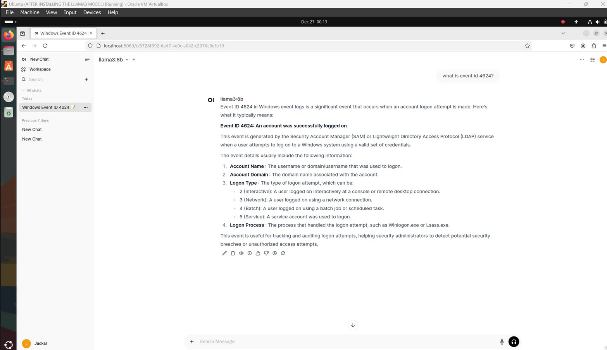
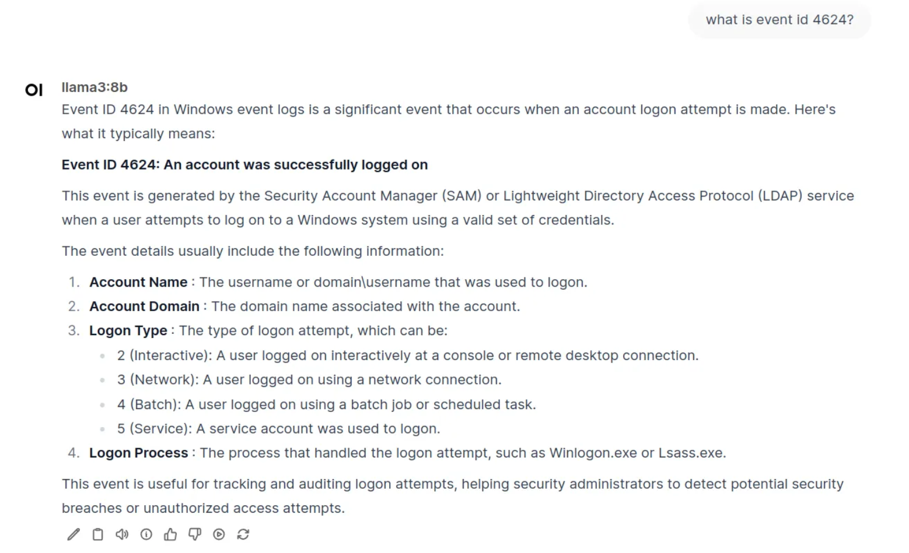
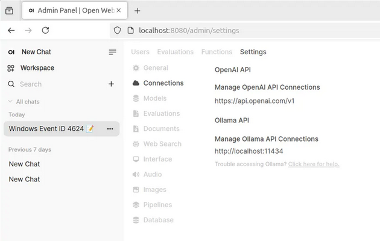

Why Local Private AI?
I've often been concerned about the accidental leakage of sensitive information through AI tools. In our day-to-day work, we may unknowingly share critical data with public AI platforms, potentially exposing confidential information. Additionally, some AI platforms might unintentionally reveal sensitive data through carefully crafted prompts, where a user manipulates the model to retrieve information it might have stored or cached.
I'll share how I've In this article, approached implementing a local, private AI solution, ensuring that all data is securely stored on the machine hosting the AI model.
To implement this, I chose OpenWebUI platform. It offered several advantages that made it ideal for my needs:
Why Local Private AI?
I've often been concerned about the accidental leakage of sensitive information through AI tools. In our day-to-day work, we may unknowingly share critical data with public AI platforms, potentially exposing confidential information. Additionally, some AI platforms might unintentionally reveal sensitive data through carefully crafted prompts, where a user manipulates the model to retrieve information it might have stored or cached.
I'll share how I've In this article, approached implementing a local, private AI solution, ensuring that all data is securely stored on the machine hosting the AI model.
To implement this, I chose OpenWebUI platform. It offered several advantages that made it ideal for my needs:
- Web Interface: OpenWebUI functions as a web interface.
- Network Accessibility: It is accessible by devices on the same network.
- Robust Retrieval-Augmented Generation (RAG): This feature enhances the AI's ability to retrieve and use context-specific information.
- Ease of Integration: OpenWebUI supports straightforward API integrations, making it easier to connect with various data sources and tools.
- Data Localization: All data is processed and stored locally, ensuring that nothing leaves the organization's secure environment.
- Setting Up the Virtual Environment:
- Installed VirtualBox and created a new Ubuntu virtual machine (VM).
- Configured the network settings to ensure access across devices within the LAN.
- Installing OpenWebUI:
- OpenWebUI requires Python 3.11, but Ubuntu's default version was Python 3.12. To address this, I Installed Python 3.11 and set up a virtual environment called myenv, ensuring that Python packages are isolated for the project:
sudo apt install python3.11 python3.11-venv
sudo ln -sf /usr/bin/python3.11 /usr/bin/python3
python3 -m venv myenv
source myenv/bin/activate
pip install open-webui
deactivateInstalled OpenWebUI inside the virtual environment using python 3.11 and for the model we will use python 3.12 outside the virtual environment.
- Integrating Meta's Llama 3 2B Model:
To integrate Meta's Llama 3 2B model, Installed the model outside the virtual environment and switched back to Python 3.12:
sudo ln -sf /usr/bin/python3.12 /usr/bin/python3
curl -fsSL https://ollama.com/install.sh | sh
ollama run llama3:8bThe model download was approximately 5GB, and once it was ready, I tested it through the OpenWebUI interface.
- Running OpenWebUI:
To start OpenWebUI with Python 3.11, I used the following commands:
sudo ln -sf /usr/bin/python3.11 /usr/bin/python3
source myenv/bin/activate
open-webui serveOnce the server was running, I could access the AI interface through a browser at http://localhost:8080, where I could select the model and start interacting with the AI.



API Integration: One of the standout features of OpenWebUI is its connection tab, which allows easy integration of external APIs, such as Google Search or internal systems, for enhanced functionality.
Challenges and Lessons Learned- Resource Management: Running models required significant computational resources, necessitating careful allocation of resources in the VM.
- User Adoption: Transitioning users from public AI platforms to a private instance required careful communication of the security benefits and addressing concerns about usability.
- OpenWebUI: https://github.com/open-webui/open-webui
- Ollama for linux: https://ollama.com/download/linux
- llama3: https://ollama.com/library/llama3
- Ubuntu: https://ubuntu.com/download/desktop
- VirtualBox: https://www.virtualbox.org/wiki/Downloads